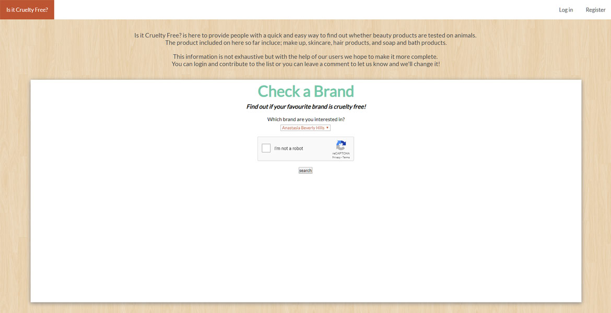 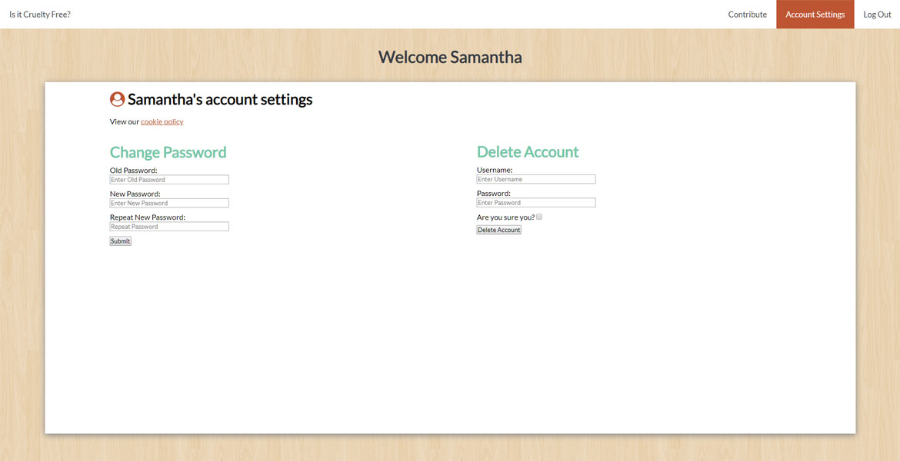 Is it Cruelty Free? A university project in which I was tasked with building a dynamic, database-driven web application. Technologies used: HTML, CSS, PHP, mySQLi, AJAX, Bootstrap
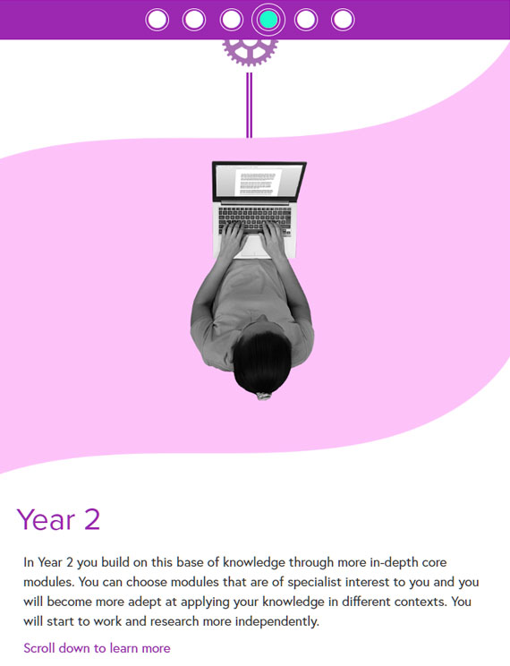 Timeline of Critical Thinking at University An interacive created during my internship for a FutureLearn course on critical thinking at university. Technologies used: HTML, CSS, JavaScript, jQuery, ScrollMagic, StickyKit
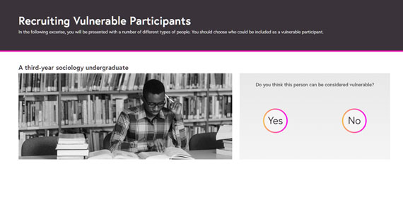 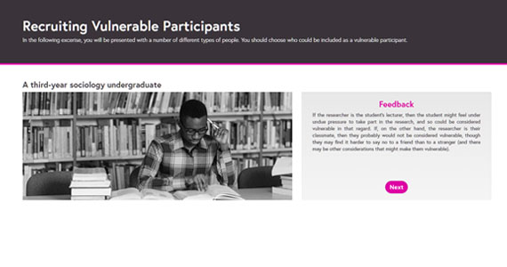 Recruiting Vulnerable Participants An interacive created during my internship for a FutureLearn course on research ethics. Technologies used: HTML, CSS, JavaScript, jQuery, Bootstrap
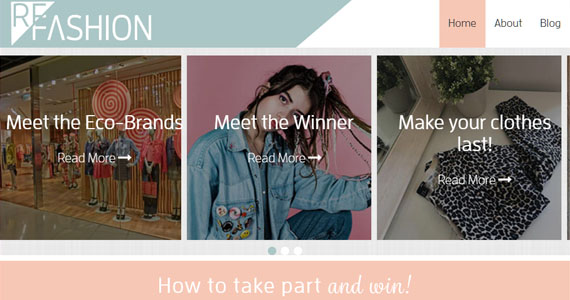 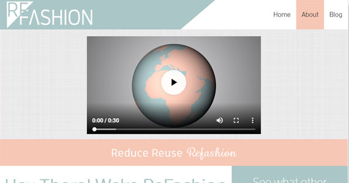 ReFashion A university group project to create a campaign and develop the accompanying materials Technologies used: HTML, CSS, PHP, JavaScript, Bootstrap, Slick Carousel
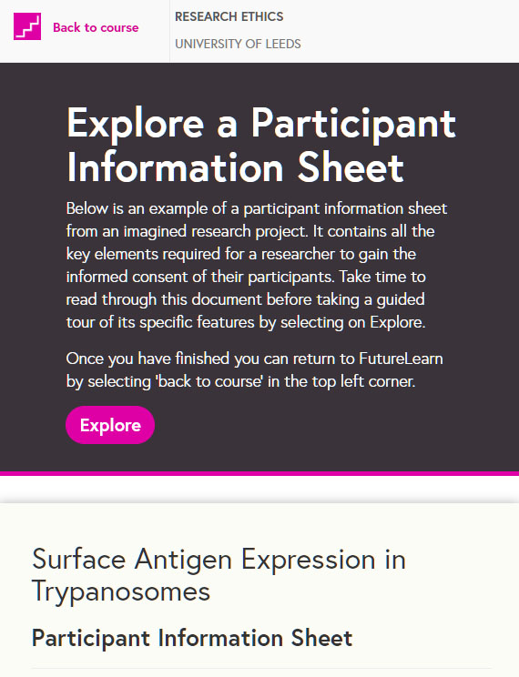 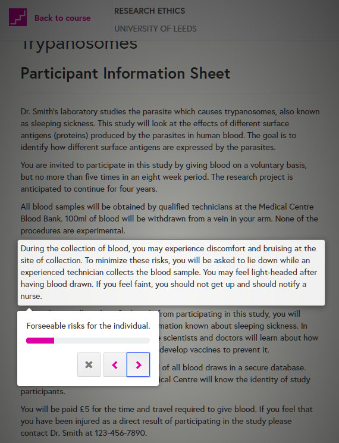 Explore a Participant Information Sheet An interacive created during my internship for a FutureLearn course on research ethics. Technologies used: HTML, CSS, JavaScript, jQuery, Bootstrap, IntroJS
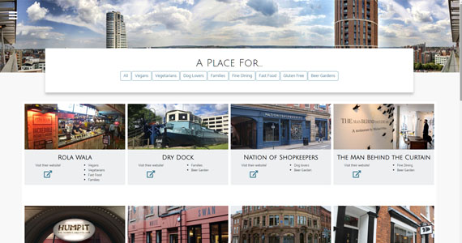 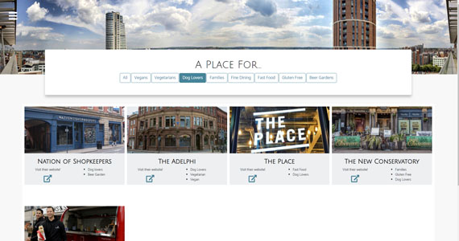 A Place For... Created for Code Girls:First course for their competition which this peice won. Technologies used: HTML, CSS, jQuery, Bootstrap